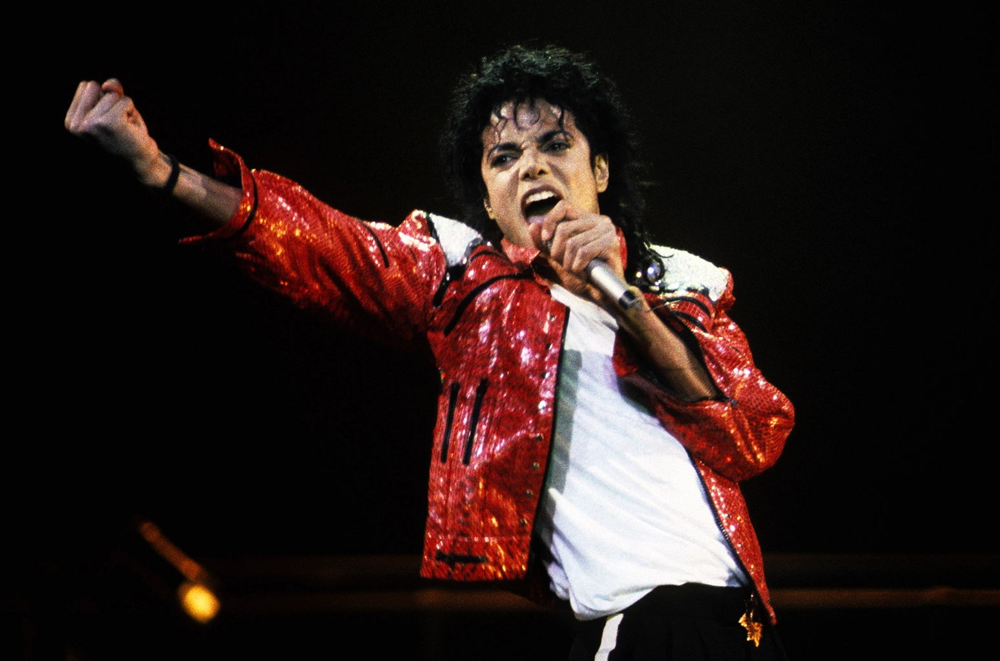

|  | Full name | Michael Joseph Jackson |
|---|---|---|
| NickName | The King Of Pop | |
| Born | born August 29, 1958, Gary, Indiana, U.S. | |
| Nationality | American | |
| occupation | Singer-songwriter,Choreographer,Film_actor,voice_actor,Dancer,model | |
| Years Actives | 1964–2009 | |
| Height | 1.75 m | |
| Children | Paris Jackson,Prince Jackson,Prince Michael Jackson II |
Known as the "King of Pop," Michael Jackson was a best-selling American singer, songwriter and dancer. As a child, Jackson became the lead singer of his family's popular Motown group, the Jackson 5. He went on to a solo career of astonishing worldwide success, delivering No. 1 hits from the albums Off the Wall, Thriller and Bad. In his later years, Jackson was dogged by allegations of child molestation. He died in 2009 at age 50 of a drug overdose just before launching a comeback tour.]
Michael grew up in a large family. He had five brothers (Jackie, Tito, Jermaine, Marlon, and Randy) and three sisters (Rebbie, La Toya, and Janet). Michael was the third youngest with Randy and Janet both being younger. The Jacksons were fairly poor and lived in a small house with just two bedrooms for eleven people.
| Title | Year | Album Sold |
|---|---|---|
| Got to Be There | 1972 | over 2.1 million copies worldwide. |
| Off The Wall | 1979 | 20 million copies |
| Thriller | 1982 | at least 66 million copies globally |
| Bad | 1987 | about 35 million copies |
| Dangerous | 1991 | 32 million copies |
| HIStory: Past, Present and Future, Book I | 1995 | 20 million copies |
| Invicible | 2001 | more than 8 million units worldwide |
| This is it | 2009 | 1.6 million units |